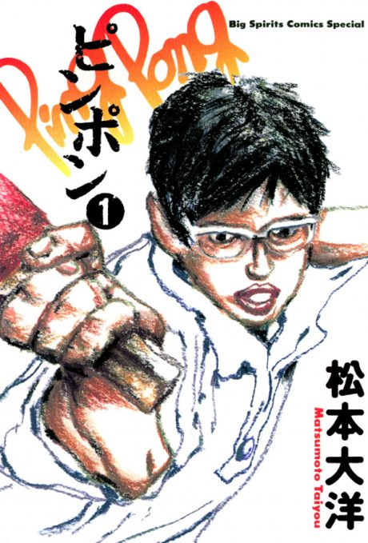

Ping Pong the Animation
ピンポン THE ANIMATION
Smile and Peko, two childhood friends, are both talented table tennis players with very different personalities.
The anime covers the whole manga.
8.6AniList score
—Animeter, no votes yet
11episodes
Rate it or report where you stopped
Arcs
Episodes numbered 1–11 (single season, 2014).
Story arcFiller arc11 episodes
1
Season 1
Peco and Smile
Childhood friends Peco and the emotionless Smile play table tennis at Katase High, where Peco is the star and Smile hides his talent.
Ep 1–2
2
Season 1
First Inter-High Preliminaries
The Inter-High preliminaries bring the friends up against Kong, Kaio Academy and its ace Dragon.
Ep 3–4
3
Season 1
Falling and Rising
After the tournament, the friends' paths split as Peco quits and Smile grows colder and stronger.
Ep 5–7
4
Season 1
Second Inter-High
A year later, the Inter-High preliminaries bring Peco back as a new hero.
Ep 8–11
Sources: Wikipedia
More like Ping Pong the Animation
 Done8.2
Done8.2
 Manga Ch. 5588.7
Manga Ch. 5588.7
 Manga Ch. 1048.2
Manga Ch. 1048.2
 Film8.3
Film8.3
 Manga Ch. 1188.1
Manga Ch. 1188.1
 Manga Ch. 838.1
Manga Ch. 838.1
 Manga Ch. 577.6
Manga Ch. 577.6
 Film8.4
Film8.4
 Manga Ch. 298.3
Manga Ch. 298.3
 Novel ahead8.1
Novel ahead8.1
 Done8.1
Done8.1
 Manga Ch. 1568.3
Manga Ch. 1568.3